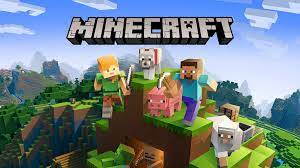

Oyun Görselleri
.jpg)
Minecraft,Minecraft, Mojang Studios tarafından geliştirilen ve 2011 yılında piyasaya sürülen bir sandbox (açık dünya) oyunudur. Oyun, Markus "Notch" Persson tarafından başlatılan ve daha sonra Mojang'a satılan bir projedir. Minecraft, çeşitli platformlarda oynanabilen popüler bir video oyunudur, bu platformlar arasında bilgisayarlar, konsollar, mobil cihazlar ve diğer oyun sistemleri bulunmaktadır. Minecraft'ın temel özellikleri şunlardır: Açık Dünya: Minecraft, oyunculara devasa bir açık dünya sunar. Bu dünya, bloklardan oluşur ve oyuncuların çeşitli malzemeleri toplamasına, yapılar inşa etmesine ve keşfetmesine olanak tanır. Hayatta Kalma Modu: Oyuncular, düşman yaratıklarla savaşmak, açlıkla mücadele etmek ve kaynakları yönetmek zorundadır. Geceleri, yaratıklar ortaya çıkar, bu da oyuncuların kendilerini savunmalarını gerektirir. Yaratıcı Mod: Yaratıcı modda, oyuncular sınırsız kaynaklara sahiptir ve hayatta kalma baskısı olmaksızın özgürce inşa edebilirler. Maden Kazma ve İnşa Etme: Oyuncular, maden kazarak çeşitli kaynakları elde edebilir ve bu kaynakları kullanarak kendi yapıları, şehirleri veya sanat eserlerini inşa edebilirler. Çoklu Oyuncu Modu: Minecraft, oyuncuların birbirleriyle çevrimiçi olarak etkileşimde bulunmalarını sağlayan çoklu oyuncu moduna sahiptir. Oyuncular, kendi sunucularını oluşturabilir veya diğer oyuncuların sunucularına katılabilirler. Geliştirici Topluluğu ve Modlar: Minecraft, büyük bir geliştirici topluluğuna sahiptir ve bu topluluk tarafından oluşturulan birçok mod, oyunun temel özelliklerini genişletir ve çeşitlendirir. Minecraft, çeşitli sürümler ve genişleme paketleri ile sürekli olarak güncellenir. Oyunun esnek ve yaratıcı yapısı, geniş bir oyuncu kitlesini etkilemiş ve popülerliğini uzun yıllar boyunca sürdürmüştür.